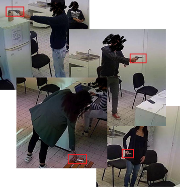
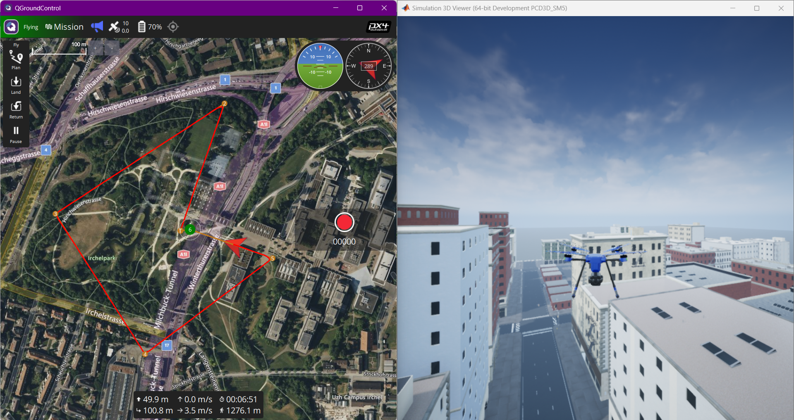

I graduated at Università Politecnica delle Marche (UNIVPM):
Bachelor’s Degree in Computer and Automation Engineering Master’s Degree in Computer and Automation Engineering
My academic journey focused on Automation and Artificial Intelligence, with particular interest in
Machine Learning, Deep Learning and Data Science. I have also studied hardware, such as microcontrollers,
sensors, and motors.
Academic Projects
Object Detection of
small objects with Super-Resolution techniques for use on edge devices with a focus on arm detection

In the field of object detection, accurately identifying small objects remains a significant challenge.
This difficulty arises from the limited and distorted data present in small regions of interest (ROIs).
This project explores a solution to overcome these limitations by utilizing a Super-Resolution (SR) technique to improve the detection of small objects, specifically focusing on weapon detection.
Hardware-In-The-Loop approach for fault simulation and validation of diagnostic modules in Unmanned Aerial Vehicles

This project aimed to develop a MATLAB toolbox for fault injection applicable to various types of Unmanned Aerial Vehicles (UAVs).
The toolbox was validated by designing and testing a fault-diagnosis algorithm using machine learning techniques.
The work included the implementation and evaluation of diagnostic modules both on an onboard computer (in simulation)
and on a real flight controller (Pixhawk).
The GeoPosBall project is a geospatial data acquisition device designed for underwater use.
It integrates advanced technologies, including the WTGAHRS2 module, M5Stamp S3 microcontroller,
and SD card storage, providing a versatile solution for accurate location and orientation data.
Control and management of an autonomus e-Bike with a STM32
Replacing the Renesas microcontroller mounted in the e-bike with a new STM32H745 board.
Implementing and testing the board with the sensors (IMU, GPS, and encoder) and actuators of the self-driving vehicle.